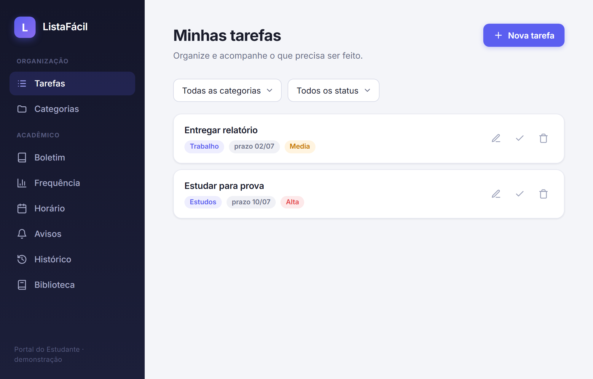

Aluno: Rodolfo Oliveira Miranda
Disciplina: Interação Humano-Computador — IFMG
Este relatório apresenta a avaliação de usabilidade do ListaFácil, um aplicativo web de gerenciamento de tarefas com módulos de apoio acadêmico. Assumindo o papel de Engenheiro de Usabilidade do próprio projeto, foram aplicadas três técnicas complementares — avaliação heurística (inspeção), testes de usabilidade (observação) e entrevistas semiestruturadas (investigação) — planejadas com o framework DECIDE e integradas ao final por meio de uma triangulação de dados. A avaliação foi conduzida com dois participantes: Júlia (25 anos) e Guilherme (15 anos), cada um realizando o teste de usabilidade e a entrevista.
O framework DECIDE (Preece et al., 2005) oferece uma checklist de seis etapas para planejar avaliações de IHC dirigidas por metas. Sua aplicação a este trabalho foi:
| Etapa | Aplicação ao ListaFácil |
|---|---|
| Determinar metas | Verificar se a interface permite concluir a tarefa central sem erros; identificar violações às heurísticas; levantar a percepção dos usuários. |
| Explorar questões | Os usuários encontram as funções? Distinguem os ícones? Percebem o efeito das ações? Interpretam a data? Qual a opinião geral? |
| Escolher técnicas | Inspeção heurística + teste de usabilidade (tarefa única) + entrevista semiestruturada. |
| Identificar questões práticas | Avaliador único (duas passadas na inspeção); dois participantes; gravação de tela/áudio; transcrição. |
| Decidir questões éticas | TCLE assinado por cada participante; mídias e transcrições em acesso restrito; transcrição feita localmente, sem envio a serviços externos. |
| Avaliar e apresentar | Dados qualitativos (inspeção e entrevistas) e quantitativos (SUS); cruzamento final por triangulação. |
Método de inspeção de Nielsen (10 heurísticas). A inspeção foi feita em duas passadas independentes, simulando dois avaliadores (o trabalho é individual), e depois consolidada. A gravidade de cada problema segue a escala de 1 (cosmético) a 4 (catastrófico).

Teste moderado, com protocolo de "pensar em voz alta" e uma tarefa única: cadastrar a tarefa "Entregar relatório" (categoria Trabalho, prioridade Alta, prazo para amanhã), localizá-la pelo filtro de categoria e marcá-la como concluída (caminho ótimo = 6 ações). Participantes: Júlia (25) e Guilherme (15).
| Participante | Idade | Criou a tarefa | Tempo | Ações (ótimo 6) | SEQ (1–7) | Principal dificuldade | SUS |
|---|---|---|---|---|---|---|---|
| Júlia | 25 | Sim | 1min48s | 8 | 6 | Ao filtrar, abriu a aba "Categorias" (cadastro) em vez do filtro; também confundiu os ícones de ação | 82,5 |
| Guilherme | 15 | Sim | 2min41s | 12 | 4 | Não localizou o filtro; "não estou acostumado com esse tipo de filtro" | 55,0 |
Nota: no momento das gravações o filtro tinha um bug (a seleção era reiniciada ao renderizar a lista), corrigido posteriormente — porém os relatos foram sobre localizar o filtro, não sobre a seleção falhar.
Duas entrevistas (mesmos participantes), gravadas em áudio e transcritas localmente. Ao final, o questionário SUS (System Usability Scale).
Cálculo: itens ímpares → (resposta − 1); itens pares → (5 − resposta); soma × 2,5.
| Item | Júlia | Guilherme |
|---|---|---|
| 1. Usaria com frequência | 3 | 2 |
| 2. Desnecessariamente complexo | 1 | 1 |
| 3. Fácil de usar | 5 | 3 |
| 4. Precisaria de apoio técnico | 1 | 3 |
| 5. Funções bem integradas | 4 | 2 |
| 6. Muito inconsistente | 1 | 1 |
| 7. Maioria aprenderia rápido | 1 | 2 |
| 8. Atrapalhado/complicado | 1 | 3 |
| 9. Senti-me confiante | 5 | 3 |
| 10. Precisei aprender muito | 1 | 2 |
| SUS (0–100) | 82,5 | 55,0 |
Média SUS = 68,75 (referência: ≥ 68 = acima da média), com forte contraste entre a usuária experiente (82,5) e o usuário mais jovem/menos habituado (55,0).
Cruzamento dos achados das três técnicas. Problemas confirmados por mais de uma técnica têm evidência mais forte; problemas vistos só na inspeção podem não ter impacto real; e problemas surgidos nos testes/entrevistas revelam limites da inspeção.
| Achado | Inspeção | Testes | Entrevistas | Evidência |
|---|---|---|---|---|
| Filtro de categoria pouco descobrível/confuso | Não previsto | Confirmado (Júlia abriu "Categorias"; Guilherme não achou) | Confirmado (Guilherme) | Forte — achado novo, ausente na inspeção |
| Ícones editar/concluir parecidos (Prob. 2) | Previsto (grav. 3) | Confirmado (Júlia) | — | Forte |
| Sem feedback ao salvar (Prob. 6) | Previsto (grav. 2) | Não observado | — | Só inspeção |
| Data ambígua (Prob. 7) | Previsto (grav. 1) | Não observado | — | Só inspeção |
| Exclusão / erros / ajuda (Prob. 1, 3, 4, 5) | Previstos | Não exercitados pela tarefa única | — | Só inspeção |
A triangulação evidencia dois pontos centrais: (1) o problema mais impactante na prática — a descoberta do filtro de categoria — não foi previsto pela inspeção heurística, o que mostra o valor de complementar a inspeção com usuários reais; e (2) a confusão de ícones foi prevista pela inspeção e confirmada no teste, ganhando prioridade. Vários problemas apontados apenas pela inspeção não foram exercitados pela tarefa única — não estão descartados, mas carecem de evidência de uso.
O ListaFácil cumpre bem sua função central (criar e concluir tarefas), mas apresenta atritos de usabilidade relevantes. Em ordem de prioridade:
Gravação das sessões de avaliação (teste de usabilidade), com acesso restrito:
https://drive.google.com/file/d/11aXdbWfkrILxCR3amUotC3k4t_taM8GB/view?usp=sharing
Transcrições geradas por reconhecimento automático de fala (Whisper), processadas localmente, e revisadas para dividir as falas entre entrevistador e entrevistado.
Entrevistador: Você já usou algum aplicativo de lista de tarefas? Como foi o ListaFácil em comparação com esse aplicativo que você usou?
Guilherme: Já. É diferente. Foi... foi mais fácil, foi bem mais simples. O outro era bem mais complexo de usar.
Entrevistador: E o que você achou da interface? Ela é agradável?
Guilherme: É agradável, sim. Ela é tipo... sem ter uma linguagem complicada ali.
Entrevistador: E as mensagens ficaram claras?
Guilherme: Sim.
Entrevistador: Você teve facilidade em encontrar ali o que você precisava?
Guilherme: É, sim. Pra concluir as coisas, concluir as tarefas, sim. Tive um pouco de dificuldade só ali na parte de filtrar.
Entrevistador: É só na parte de filtrar que você achou mais difícil? Por que você acha que teve dificuldade em encontrar o filtro? É que você não está acostumado com esse tipo de filtro, ou não achou muito intuitivo?
Guilherme: Eu não estou acostumado com esse tipo de filtro.
Entrevistador: Entendi. Agora algumas afirmações sobre o quanto você concorda, de 1 ("discordo totalmente") a 5 ("concordo totalmente"). [Questionário SUS]
Respostas SUS (itens 1 a 10): 2, 1, 3, 3, 2, 1, 2, 3, 3, 2.
Entrevistador: Primeiro algumas perguntas gerais e depois um questionário de 1 a 5. Você já usou apps de lista de tarefas antes?
Júlia: Sim. (já usou Trello e Asana)
Entrevistador: O que você achou da interface? É agradável?
Júlia: Sim.
Entrevistador: Agora o questionário final: o quanto você concorda com cada frase, de 1 ("discordo totalmente") a 5 ("concordo totalmente"). [Questionário SUS]
Respostas SUS (itens 1 a 10): 3, 1, 5, 1, 4, 1, 1, 1, 5, 1.